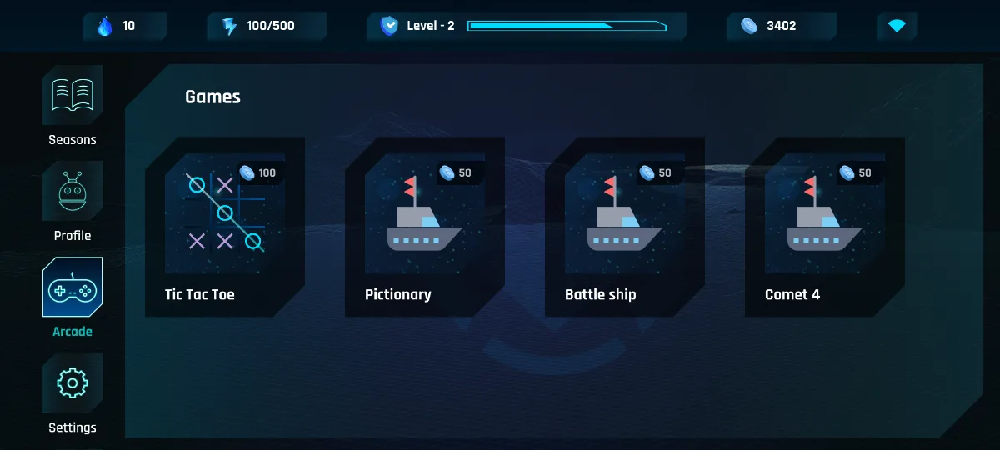
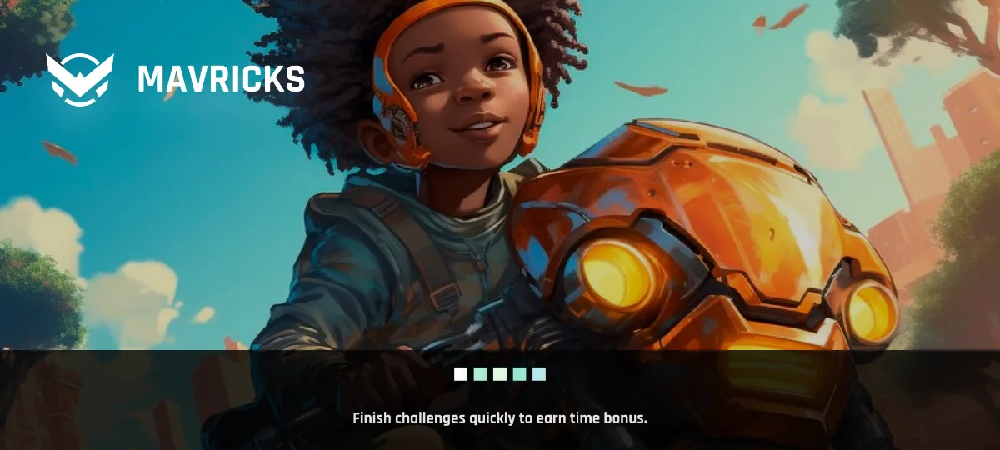
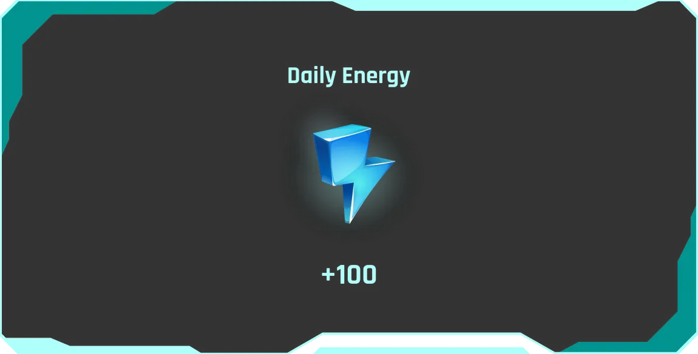
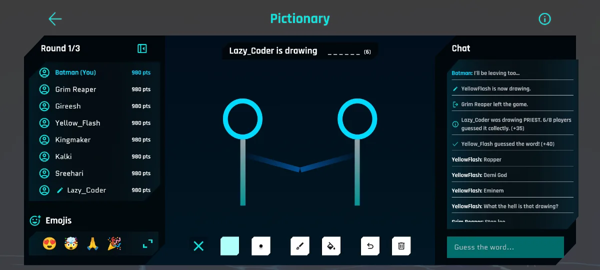
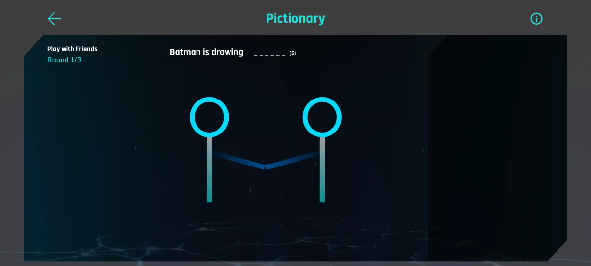
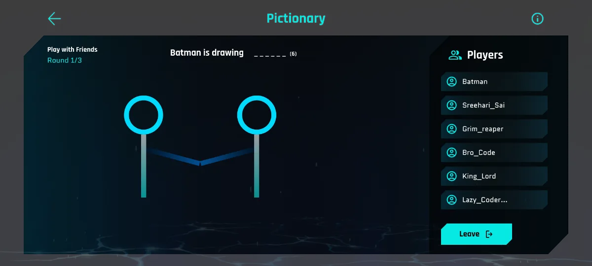
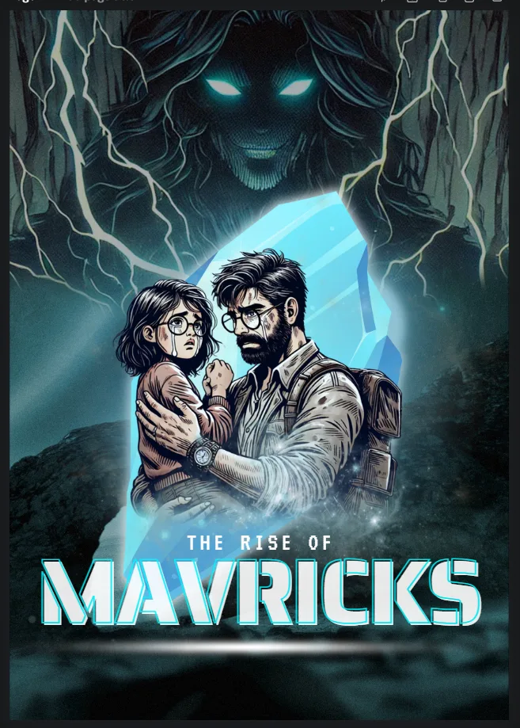
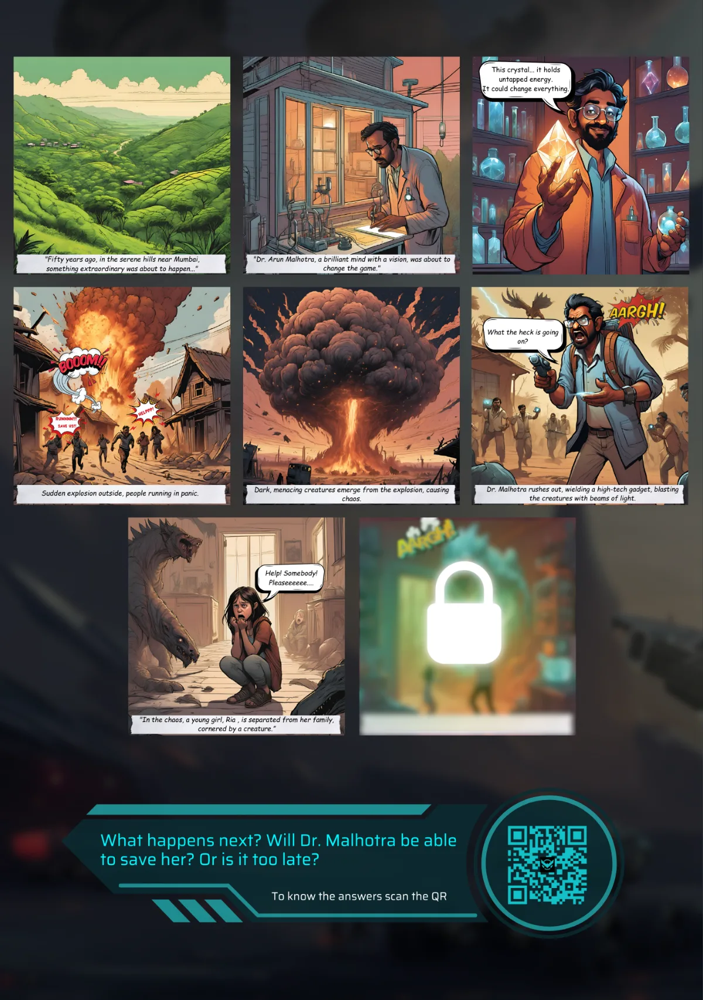
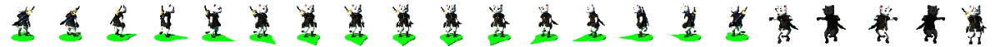

Source files are under NDA · Figma on request
There was a product idea. There wasn't a product language.
Development was already half done. What existed was a demonstration, not an interface: Freepik illustrations next to AI art in three different styles, screens handed to developers as flat PNGs, they'd pushed back before I arrived. No components, no hierarchy, no icon set, no website. An idea and a demo story.
I wanted to build the brand first. The answer was ship now, redesign later. So I cleaned up the scrap, vectors instead of PNGs, an SVG icon set, primary and secondary buttons, repeatable card patterns, got consistency into the build, and only then designed the world of Mavricks properly and rebuilt every screen by hand. Every screen, icon and component in this case study was drawn by hand, no AI anywhere in the product. In 2024 there was nothing worth using, and by the time there was, this had already shipped.
{{ eraCaption }}
Mavericks → Mavricks
Dropping a letter sounds cosmetic. It wasn't. “Mavericks” was a generic word owned by other people; “Mavricks” was ours, and it forced the whole identity to be rebuilt rather than patched, a mark, a lockup set, one type system and one palette, before a single screen was redrawn.
I wanted a superhero mask in the logo. That was the whole brief I gave myself, and it took a few iterations to get out of drawing a face: the mask became a pair of wings closing into a V, and the brow became an arc sitting above them. It kept the mask silhouette and picked up a second meaning, ascent.
One colour treatment, three lockups. Gradient navy only, because a nine-year-old recognises a shape long before a palette, so the shape got the variety and the colour stayed fixed.
Rajdhani
Bold · Semibold, titles, buttons, top bar
Quantico
Regular, body, labels, in-game text
Navy carries structure, the teal tertiary carries every interactive state in-game. That split is why the arcade reads as one place even across four different games.
Six steps before a kid can play. Each one had to earn its place.
Phone-number auth is a hard requirement for a product schools buy, and every extra field is a place to lose a nine-year-old. So the copy speaks in-world, “Yo! Welcome Aboard”, “Hi Maverick!”, validation is inline rather than blocking, and the avatar only appears once there's a name to attach it to. The last step is a playable demo instead of a tutorial: solve the Kohinoor Diamond case before you have anything to lose.
This is the spine, taken from the fast prototype I built to argue the flow. The edge cases, the toasts and the skip confirm live in the file.
← scroll the funnel →
{{ r.body }}
Four pillars, one HUD, never a hamburger.
Everything hangs off a permanent left rail and a permanent top HUD. The rail carries the four destinations; the HUD carries the four things they always want to know, energy, coins, level progress, streak.
No nested menus, no hidden navigation. A ten-year-old should never have to remember where something lives, and a parent glancing over a shoulder should be able to read the state of the account in one second.



The story is a map, and the download state is the interface.
Each season is an episode, Become a Mavrick, Defeat Mad Scientist, The Origins, and each one is a real download on a real school phone with real storage limits. So the season card carries its own lifecycle: fetch it, watch it pull, play it, clear it. Progress is stated as missions completed, never as a vague percentage, because “3/10” is a promise a child can hold, and it sits on the island node itself rather than in a screen of its own.
{{ seasonNote }}
Eight kids, one board, and only two seats.
The arcade never went live. This was early UX and UI, me experimenting with flows and gameplay to see whether a classroom-sized room could work at all. Three screens carry the whole idea: the room, the choice, the match. Tic Tac Toe seats two, so eight can join and the admin decides who plays; everyone else becomes a spectator instead of being dropped. Coins are pooled before the first move, so the stake is stated once, centrally, and never discovered after losing.
{{ mpNote }}
{{ r.body }}
Nobody had drawn Pictionary sideways.
Every drawing-and-guessing game I could find at the time was built portrait, canvas on top, chat underneath. Mavricks is played on a phone held sideways, so there was no layout to borrow and no convention to lean on. The frame ended up as three vertical bands: players and score hard left, canvas centre, chat and guess field right, with the word, the round count and the drawer's name floating over the canvas instead of stealing a band from it. Both side panels collapse, because the moment someone is actually drawing, the canvas is the only thing that matters.



Leagues and ranks shipped. The rest we parked on purpose.
XP measures learning, coins buy play, energy limits it. Keeping the three separate is what lets a parent see progress and a child see a reward on the same screen. Leagues turned that into a weekly rhythm, a promotion zone you can see yourself sitting in, and ranks unlock rather than expire, so the ladder reads as a route instead of a wall. That is what we actually built. The rest of the progression list was a good idea with no evidence behind it yet, so it stayed on paper.
Every dialogue is the same dialogue.
One modal component, one confirm pattern, one toast family, reskinned by intent, never redrawn. That is what made the redesign shippable at speed: a developer implements the shell once, and quit, logout, skip, rename, cache-clear and success all fall out of it. Destructive actions always sit right, cancel always sits left, and nothing important is ever a bare icon.
Version one is never the argument. It's the start of one.
Almost nothing here shipped on the first pass. These are the pairs I took into review: same job, different bet on hierarchy. Flip between them, the second version usually wins by removing something rather than adding it.
{{ iterNote }}
So we stopped guessing and went to schools.
I presented the rebuilt product to the CEO, tech lead, PM and team as a working prototype rather than a screen deck. They backed the direction and engineering re-planned around it. Then we put it in front of actual students and watched.
{{ caption }}
{{ t.body }}
“I'm trying to get him off the phone, not give him another reason to be on it.” And, from others, “if it actually teaches her something, I'm fine with it.” Both were true at once. That's the tension we couldn't design away.
Generating one good image is easy. Generating a universe isn't.
The UI was never the hardest part. Content was. A comic universe needs the same character to look like the same character on page 40 as on page 1, same faces, same environments, week after week.


As a team we pushed everything available on the content side: ChatGPT, DALL·E, Midjourney, seed numbers, reference chaining. Interesting images, inconsistent worlds, the same character came back with a different face every third render.
None of it ever touched the product UI, which stayed hand-drawn throughout. So the team changed shape instead: a marketing manager for schools, a professional story writer, two digital comic artists.
Three months later the content still wasn't landing, and I was the bridge between product, design, story, illustration and video, briefing editors, cutting assets myself, keeping one visual world across all of it.

The product had to exist in a school corridor.
Mavricks was going into schools and malls, which meant the identity had to survive print, merch and a stranger's ten-second glance. Every piece asks one question and answers it with a QR: can you solve the mystery?
It shipped. Then the business case didn't close.
Seasons, the funnel, the comics and the design system all went out, the app is on Google Play. The arcade and the multiplayer rooms never left design. What didn't close was the economics: content production at that quality costs real money, and the revenue path wasn't clear enough yet. The CEO paused Mavricks.
I thought it would be a two-week pause.
Figma file shared on request.
The app is public on Google Play. The working files aren't, happy to walk you through the component library, the prototype and the unreleased screens directly.
A confident assumption survives exactly until you watch a ten-year-old use your product.